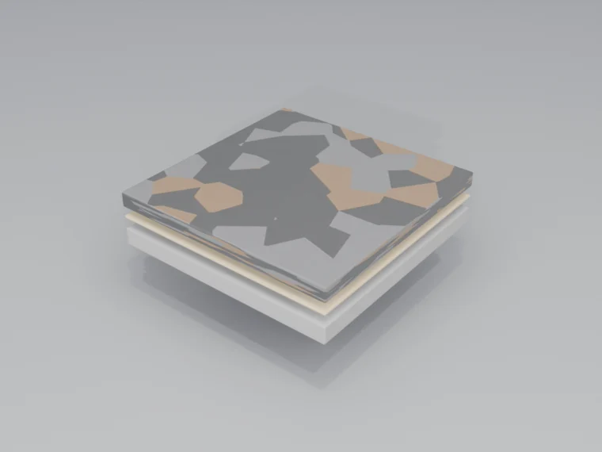

רצפת גומי מולקן לסביבות שבהן נוחות, בטיחות ובליעת רעש הן עיקריות. זמינה ביריעות, באריחים או כמערכת יצוקה במקום — בהתאמה לכל יישום.
היכן רצפת גומי מצטיינת
רצפת גומי מספקת את השילוב המושלם של עמידות, נוחות ובטיחות לסביבות תובעניות שבהן אנשים עומדים, נעים ועובדים.
מתקני כושר
חדרי כושר, חדרי משקולות, מתחמי CrossFit. בליעת הלם, הגנה מפני משקולות נופלות וניקוי קל.
בריאות
בתי חולים, מרפאות, בתי אבות. אנטי-עייפות לצוות, מונעת החלקה ובולעת רעש.
חינוך
בתי ספר, אוניברסיטאות, ספריות. עמידה, שקטה, בטוחה מפני החלקה. אפשרויות ממוחזרות בנות-קיימא.
גני שעשועים ופנאי
משטח בטיחות לאזורי משחק. מערכות גומי יצוק מדורגות לפי גובה נפילה.
הכנת תשתית
רצפת גומי ניתנת להדבקה, להנחה חופשית או להתקנה מעל שכבת ביניים. דרישות התשתית משתנות לפי שיטת ההתקנה.
- הדבקה מלאה — התשתית חייבת להיות מישורית (SR1–SR2), יבשה ונקייה ממזהמים. מתאימה ביותר להתקנות קבועות
- הנחה חופשית — אריחי גומי כבדים ניתנים להנחה חופשית. מאפשרת החלפה וגישה לתשתית
- אריחים משתלבים — ללא צורך בדבק. התקנה מהירה לחדרי כושר וליישומים זמניים
- גומי יצוק — גרגרי EPDM מאוגדים בפוליאוריתן. ללא תפרים, בכל עובי, מדורג לגני שעשועים
- לחות — הגומי אטים; יש לטפל בעודף לחות כדי למנוע עובש מתחתיו
סוגי רצפות גומי
אנו מציעים מספר טכנולוגיות רצפת גומי בהתאמה לדרישות היישום הספציפי שלכם.

גומי מולקן
יריעות או אריחים מיוצרים במפעל. תהליך הוולקניזציה יוצר מוצר עמיד וגמיש. זמין בנוסחאות טבעיות או סינתטיות.
גומי ממוחזר
מיוצר מצמיגים ממוחזרים. זמין כאריחים, יריעות או יציקה במקום. מצוין לחדרי כושר ולגני שעשועים. בחירה בת-קיימא.
EPDM יצוק
גרגרי גומי EPDM מעורבבים בקושר פוליאוריתן ונוצקים באתר. ללא תפרים, בכל עובי, בכל צבע. אידיאלי לגני שעשועים ולמשטחי ספורט.
דוגמאות פני שטח
מרקמי פני שטח שונים מספקים רמות שונות של התנגדות החלקה ואפשרויות אסתטיות:
חלק
קל לניקוי. נפוץ בבריאות ובקמעונאות. דורש תכן ניקוז טוב לאזורים רטובים.
דסקיות בולטות / כפתורים
מראה רצפת גומי קלאסי. התנגדות החלקה מוגברת. יישומי תחבורה ותעשייה.
מרוקע
ממורקם להתנגדות החלקה ולעניין חזותי. מסתיר היטב סימני בלאי.
בהתאמה אישית
לוגואים, דוגמאות וניווט משולבים ברצפה. אפשרויות העיצוב בלתי מוגבלות.
יתרונות עיקריים
- נוחות ואנטי-עייפות — פני שטח מרופדים מפחיתים עומס על הרגליים והגב. חיוני לסביבות עבודה בעמידה.
- בליעת רעש — מפחיתה משמעותית רעש הולם והעברת קול אווירי. חללים שקטים יותר.
- התנגדות החלקה — אחיזה טבעית גם ברטיבות. פרופיל בטיחות מצוין לאזורים בתנועה גבוהה.
- בליעת הלם — מגינה על פריטים נופלים ובולעת נפילות. קריטי לחדרי כושר ולאזורי משחק.
- אפשרויות בנות-קיימא — תכולת צמיגים ממוחזרים. גומי טבעי ממקורות בני-קיימא. אורך חיים ארוך.
- תחזוקה קלה — טאטוא ושטיפה. אין צורך בהברקה. פני שטח גמישים שעמידים בפני כתמים.
פרוטוקול תחזוקה
רצפת גומי דלת-תחזוקה וגמישה. טיפול נכון מאריך את אורך החיים ושומר על המראה.
יומי
טאטאו או שאבו להסרת גרגרים. שטיפה לחה של אזורים בתנועה גבוהה לפי הצורך.
שבועי
קרצוף מכונה בחומר ניקוי pH ניטרלי. שטיפה יסודית למניעת הצטברות שאריות.
חודשי
ניקוי לעומק ובדיקה לאיתור נזק. טיפלו בחתכים או קרעים מיד.
שנתי
ניקוי מקצועי לפי הצורך. בדקו תפרים וקצוות לאיתור התרוממות.
זקוקים לפתרון רצפת גומי?
נמליץ על מוצר הגומי הנכון ליישום ולדרישות הספציפיים שלכם.
קבלת הצעת מחיר חינם